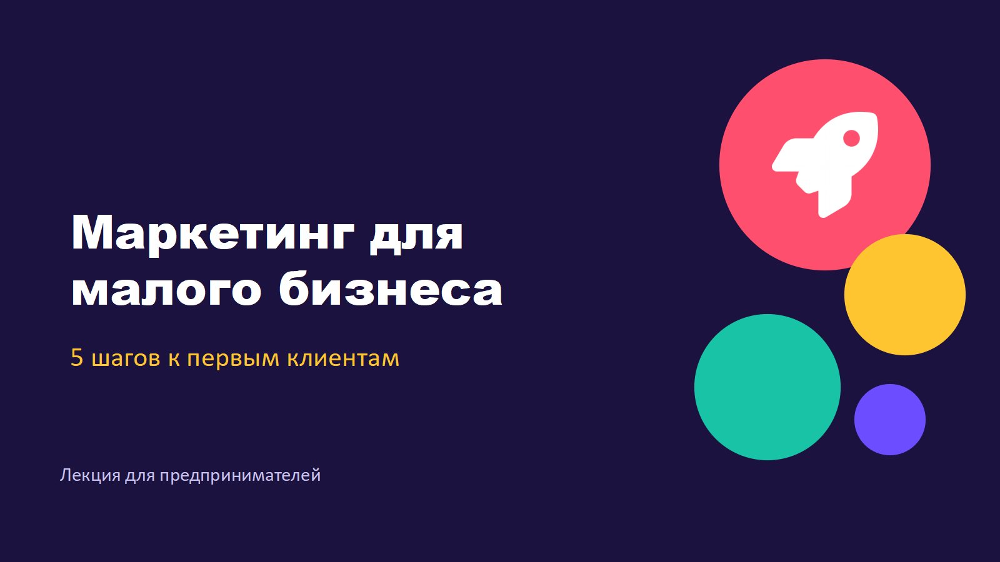
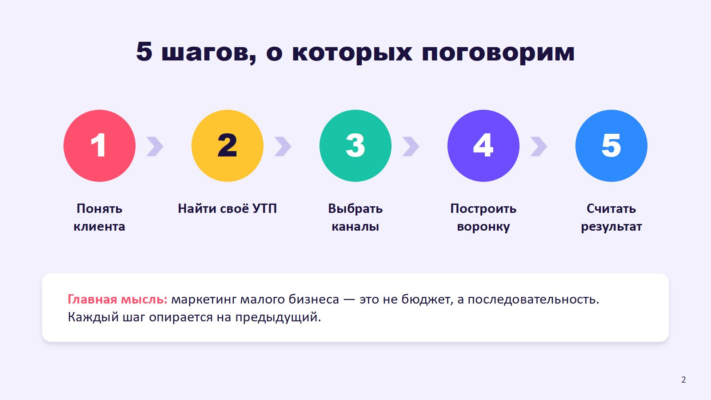
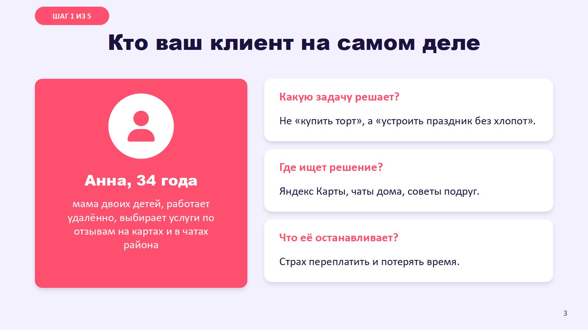
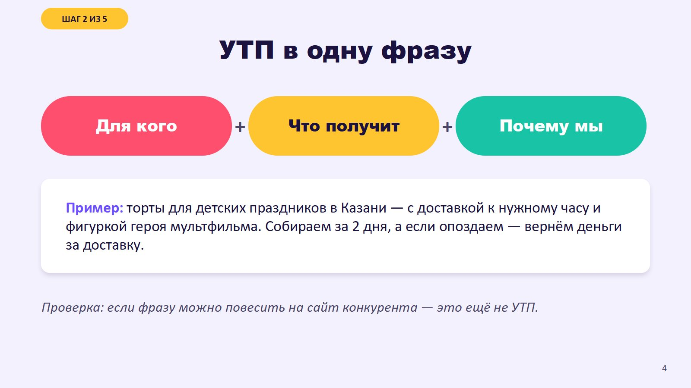
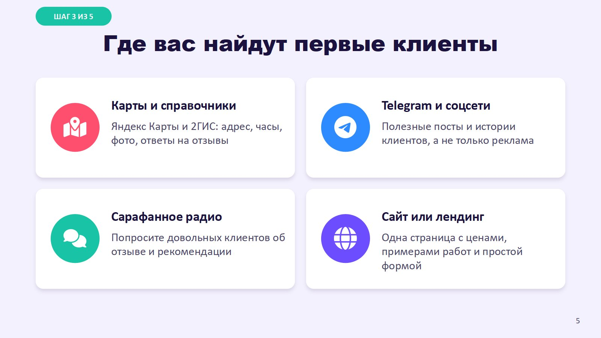
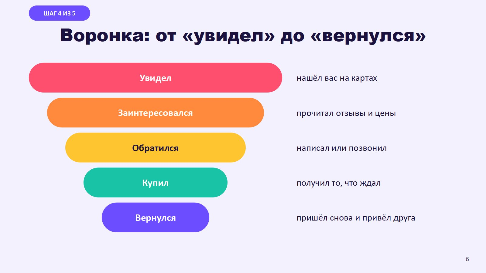
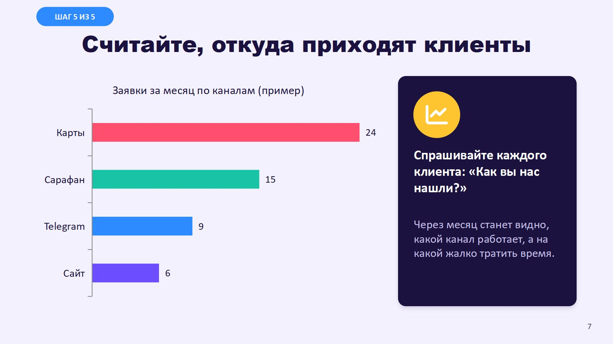
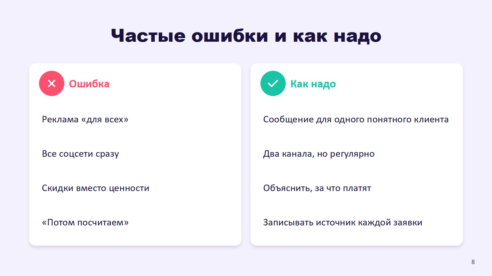
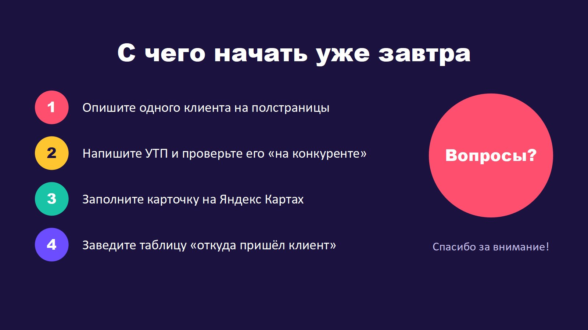

1 / 9Можно править самому
Тема, цвета и шрифты заданы в макетах PowerPoint: заголовки и тексты меняются без поломки вёрстки.
Живая диаграмма
График — настоящий объект PowerPoint, а не картинка: цифры легко заменить своими.
Заметки докладчика
К каждому слайду — подсказка, что рассказать. Видна в режиме докладчика.